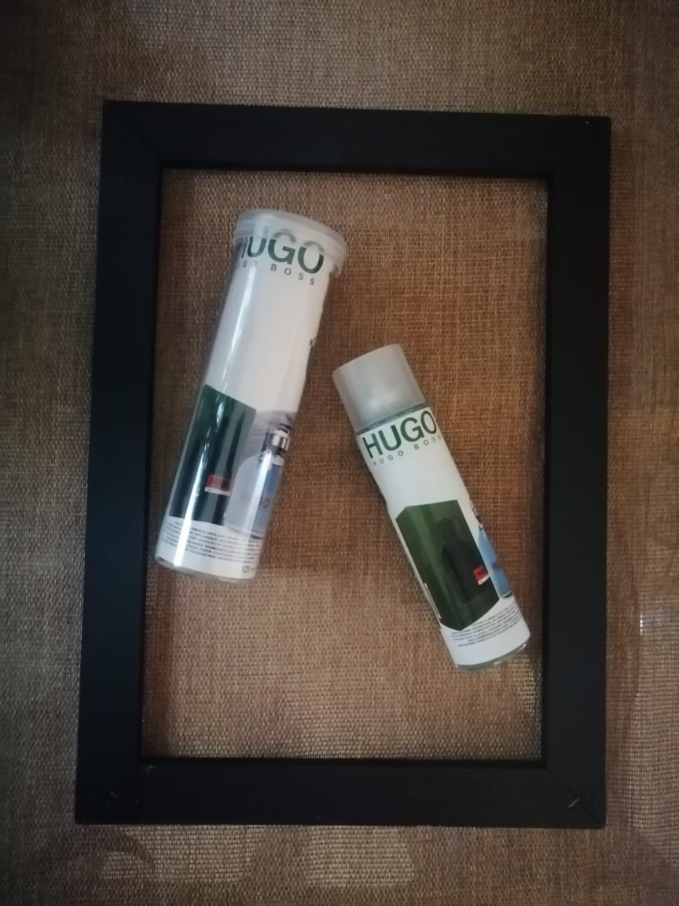
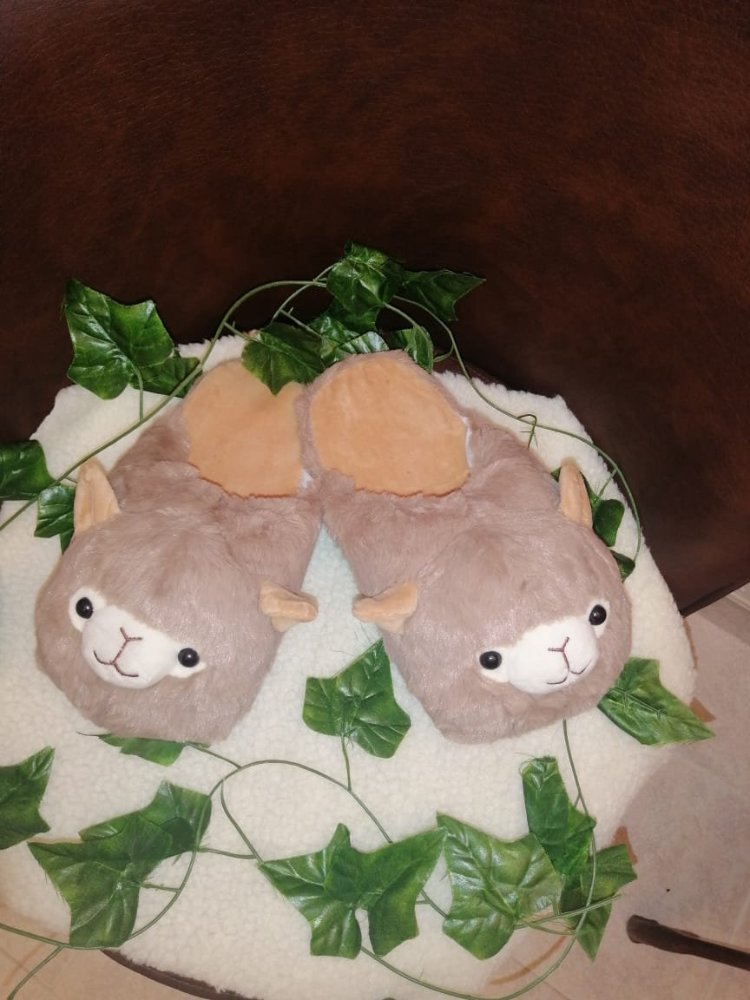
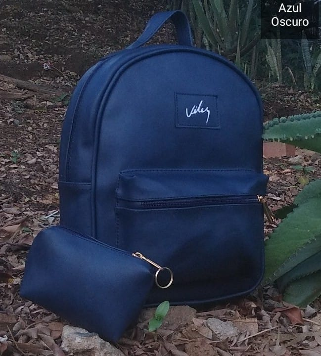
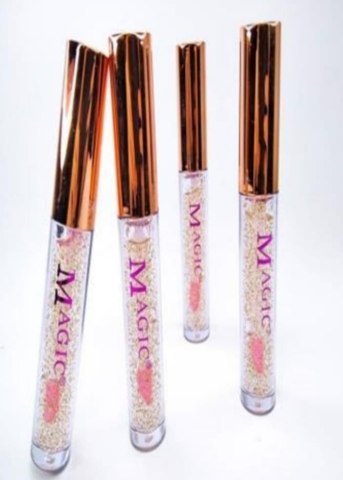

Para suplir esas necesidades que tienes para tu presentacion personal, apariencia física, y ese toque especial para verte y sentirte diferente.
Danos el gusto de hacer que te veas y te sientas felíz, encontraras todo en maquillaje, accesorios, bisuteria, cuidado personal, facial, corporal entre otros.
Criss Accesorios
Embellecemos mujeres con un toque de encanto.

Lociones

Pantuflas

Bolsos

Brillos segun tu PH
Tienda Online de Accesorios y Más
Contamos con productos de belleza y cuidado personal, maquillaje, tratamientos corporales y faciales, accesorios, lociones y todo lo relacionado con tu imagen.
Concejos para la piel, ofrecemos todo lo que necesitas, Bienvenidos.